Joseph and Assin Aoun, their nine children and how the family reached Brooklyn.
Part OneThe Aoun (Awn) Family, from Damour to Brooklyn
What we foundThe family was Aoun in Damour. The family says the name became Awn in America, and records also wrote it Owen and Aun; Joseph’s death certificate says Owen.
The Awn story begins in Damour, a coastal village south of Beirut.
Damour sits on the Mediterranean coast about eleven miles south of Beirut. When the Aouns left in the summer of 1920, the First World War had only just ended, and Mount Lebanon was recovering from a wartime famine that, by most historians' estimates, killed a large share of its people. In September 1920, as the family crossed into New York State, France was proclaiming the new state of Greater Lebanon under its mandate. This is background, not a record of this family, and the papers do not tell us why Joseph and Assin decided to go. What they do tell us is that they took all eight children with them, a party of ten on third-class tickets by way of Southampton and Quebec, with Joseph about 50 years old and Brooklyn as their destination. That is a lot to stake on a new country.
Joseph and Assin Aoun
Still open in this line ↓Joseph’s pageAssin’s pageAnthony’s page
Spellings: the family name is Aoun, Awn or Owen in the records, and we treat them as one family. Joseph is Yusuf in Arabic. Assin is written Essine, Aseen, Affin and Assin.
Joseph's death certificate, 14 September 1932. The New York City certificate for "Joseph K. Owen," died at about 1 a.m. on 14 September 1932 in Brooklyn, born 21 November 1869, aged 62 years, 9 months, 7 days (this day count does not fit the printed birth date: from 21 November 1869 to 14 September 1932 is 62 years, 9 months and 24 days, while 9 months and 7 days would point to about 7 December 1869, so the records disagree and his birth date is an open question). It lists him as married to "Assin Owen," retired, 12 years in the U.S. and in New York City, son of "Peter Owen" and "Teresa Owen," both of Syria. The cause is cardiac failure (one day), with coronary thrombosis (six days) contributing, signed by the attending physician. Burial was at St. John's Cemetery on 16 September, with Jere J. Cronin, Inc., of 115 Atlantic Avenue as undertaker. The second picture is the bottom of the back of the certificate, where the undertaker's statement is signed "Mrs. Assin Owen" as the "Wife" of the deceased, the person who asked for the burial permit. The record shows the first name Joseph and the family name spelled Owen. Source: New York City Department of Health, Standard Certificate of Death, Brooklyn, registered no. 18405 (1932), as viewed on FamilySearch / New York City Municipal Deaths. Name as written: Joseph K. Owen.


Assin's death certificate, 16 October 1935. The certificate for "Assin Owen," a widow whose age is hard to read (the Times Union gives 52), who did housework, died about 1 a.m. on 16 October 1935 at Bay Ridge Hospital, Brooklyn; she lived at 1047 75th Street and had been in the U.S. and New York City for 14 years. Her father is written "Joseph Segen" (her son Louis's 1937 marriage certificate gives "Segan") and her mother's maiden name appears to read "Susanne Nahmir" (hard to read: the first letter could also be K or H, and the last letter r or e, so this is our best reading). Her date of birth is blank. The cause is acute gangrenous appendicitis (ruptured), after an appendectomy, with toxic myocarditis contributing. She was buried at St. John's Cemetery on 18 October. The back carries the undertaker's statement, which names "John Owen" of 1047 75th Street as her "Son," the next of kin who asked for the burial permit. The record spells the family name Owen. Source: New York City Department of Health, Standard Certificate of Death, Brooklyn, registered no. 20730 (1935), as viewed on FamilySearch / New York City Municipal Deaths. Name as written: Assin Owen.

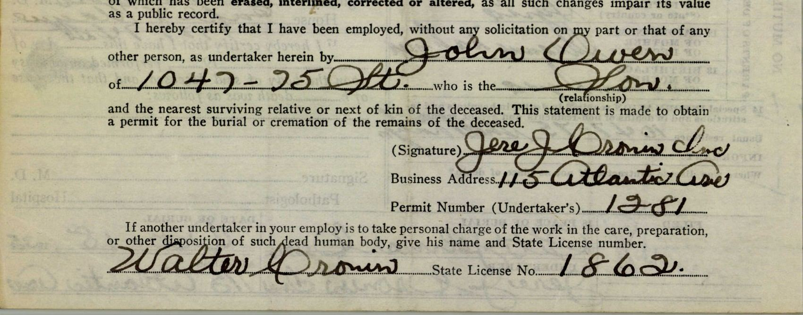
Joseph's death notice, September 1932. As printed: Joseph K. Owen, 62, of 590 78th Street, died "yesterday" at home. He was born in Damour, Syria, and had lived in Brooklyn for 12 years. He leaves his wife, Affin (Assin); four sons, John, Mitchell, Louis and Anthony; and two daughters, Matilda and Theresa. The funeral was to go from the home to St. Mary's Syrian R. C. Church on Hicks Street for a requiem mass, with burial at St. John's Cemetery under J. J. Cronin.
Four things stand out. Louis is Elias, who signed his 1937 marriage certificate as Louis J. Awn. The same four sons are named in Esther Ayoub’s 1961 notice. George is named in none of the three notices, and neither is Nassib (Nessil), who died in 1924; we now know why. George drowned in July 1930, as the Arabic papers of that week report, and Nassib died in 1924. The address, 590 78th Street, is also the address on Joseph's death certificate (Document 82), while the 1930 Arabic notice for George (Document 135) gives 466 78th Street. And the funeral church is St. Mary’s Syrian Roman Catholic, while the Arabic papers say Our Lady of Lebanon, so that detail is still open.
Source: Brooklyn Times Union, 15 September 1932, page 22 (taken from the file name of the saved copy; the clipping itself does not print the paper or date). Names as printed: Joseph K. Owen, Affin, John, Mitchell, Louis, Anthony, Matilda, Theresa.
Assin's death notice, October 1935. As printed: Assin Owen, 52, a native of Syria, died "yesterday" at her home, 1047 75th Street. She leaves four sons, John, Mitchell, Louis and Anthony, and two daughters, Matilda and Theresa. The funeral was to be held on Friday at 9:30 a.m. with a solemn requiem mass at Our Lady of Lebanon R. C. Church, with burial at St. John's Cemetery, directed by Jere J. Cronin. The date fits her death on 16 October 1935 and a Friday funeral on 18 October.
The list of children is the same as in Joseph's notice three years earlier (Document 133); George had drowned in 1930, five years before. Joseph's funeral was at St. Mary's Syrian R. C. Church and Assin's at Our Lady of Lebanon; both notices call the church Roman Catholic.
Source: Brooklyn Times Union, 17 October 1935, page 22 (taken from the file name of the saved copy; the clipping itself does not print the paper or date). Names as printed: Assin Owen, John, Mitchell, Louis, Anthony, Matilda, Theresa.
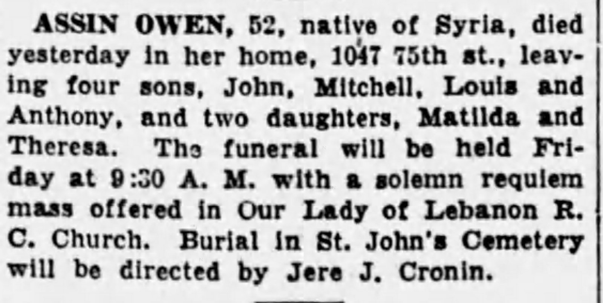
The 1930 census, 466 78th Street. Sheet 4B, enumerated 7 April 1930: “Awn, Joseph,” head, 60; “Jassin” (our reading), wife, 50; and John, 26, Theresa, 23, George, 21, Mitchell, 20, Louis, 18 and Anthony, 16. Everyone is written “Awn,” born in Syria, and came in 1920. Matilda is not in this household. Source: FamilySearch, 1930 census, Brooklyn, sheet 4B.
- 21 Nov 1869Joseph’s birth, as his death certificate gives it
- 3 Sep 1920Joseph, Assin and eight children reach Quebec
- 7 Apr 1930The census counts the family at 466 78th Street
- 28 Apr 1930A Damour brotherhood elects a treasurer named Yusuf al-Khoury Awn (probably Joseph)
- 14 Sep 1932Joseph dies at home in Brooklyn
- 16 Oct 1935Assin dies at Bay Ridge Hospital
- 8 Jun 1961Assin and George are moved at St. John’s, the cemetery’s search shows
What we foundThe man the city wrote down as “Joseph K. Owen” was Yusuf al-Khoury Butrus Awn to his own people. Yusuf is the Arabic form of Joseph, Butrus is Peter, and the K. most likely stands for Khoury (our translation, to be confirmed by a native reader).
“Death of a righteous man”Al-Hoda, 17 September 1932, p.3, the local-news headline over Joseph’s death (our translation, to be confirmed by a native reader)
When Joseph died in Brooklyn on 14 September 1932, the city recorded him as “Joseph K. Owen,” retired, aged 62, the son of Peter and Teresa Owen. The Arabic paper Al-Hoda printed what looks like another man: “Yusuf al-Khoury Butrus Awn,” of Damour (our translation, to be confirmed by a native reader). He is one person, and the two names fit together. The ship list of 1920 had already written him a third way, Youseuf Aoun, a farmer of 53 (a second word is crossed out).
His death certificate says he was born on 21 November 1869, and that he had lived in the United States for 12 years, which fits the family’s arrival in 1920. He died of cardiac failure with a coronary thrombosis and was buried at St. John’s Cemetery on 16 September. Al-Hoda said he died of a heart attack on the Wednesday morning, that the funeral Mass was at Our Lady of Lebanon on Hicks Street, and said that members of the Damour fraternity came (our translation). The Brooklyn Times Union says St. Mary’s Syrian Roman Catholic Church on Hicks Street; we take these to be one church under two names.
The same fraternity may show up two years earlier. On the evening of Monday 28 April 1930, the Damouri Fraternity Society met at Columbus Hall and chose its officers, and its treasurer is printed as “Yusuf al-Khoury Awn” (Al-Hoda, 23 May 1930; our translation). It is probably Joseph, since the name matches the one in his notices and he was a Damour man, but nothing on the page says so, and the other Awns elected with him are named without any link to him. If it was him, he was trusted with the Damour men’s money at the age of sixty.
Three weeks before that meeting, on 7 April 1930, the census taker found the family at 466 78th Street. Joseph is written “Awn, Joseph,” 60 and retired, and his wife is written “Jassin” (our reading), 50. Six of their children are on the sheet: John, 26, managing a dry goods store; Theresa, 23, a clerk in the same trade; George, 21, managing a ladies’ apparel store; Mitchell, 20, a clerk in a ladies’ apparel store; Louis, 18; and Anthony, 16, still at school. All are written “Awn,” all were born in Syria, and all give 1920 as the year they came. Matilda is not in this household.
One more page may tell us about his own family. In March 1926 the Damour magazine Ash-Shams printed a notice of the death in Brazil of “the late Jibrail,” who had emigrated about 1911, and it condoled his two brothers, “Khawaja Mikhail in Damour and Khawaja Yusuf in New York” (our translation). The notice is addressed to a Mikhail al-Khoury Boutros Awn, and Joseph’s father is Peter (Butrus) on his certificate. So Joseph may have had a brother who stayed in Damour and another who went to Brazil. This is the only record that says so, and no other record names either brother. A second Ash-Shams page, of July 1934, mentions the family of a “late Jibrail al-Khoury Awn” in Brazil, but it names none of Joseph’s family.
His wife Assin Aoun was written Essine on the ship list, Aseen in the 1925 census and Affin in one 1932 notice. Her death certificate gives her father as Joseph Segan (Segen; Sajaan in Arabic) and her mother as Susanne, with a family name that reads Nahmir in a hard-to-read hand. She died on Wednesday 16 October 1935 at Bay Ridge Hospital, a widow living at 1047 75th Street, of a ruptured appendix after an emergency appendectomy. Her son John asked for the burial permit. A Mass was said for her at Our Lady of Lebanon on Friday 18 October, the day she was buried at St. John’s, and Al-Hoda called her “the late Assin Yusuf al-Khoury Awn of Damour,” which probably puts her husband’s name after hers, the usual way in these notices. Her age is 45 on the ship list, 40 in the 1925 census and 52 in the Times Union notice (the certificate’s own age is hard to read), so her birth year is unknown.
Her notice reads like a map of the neighborhood. It names her children and their families, the sons of Habib Aoun (Sajaan, Khalil, Farid, Sa’id and Shaker), a widow, Sofia Ghareeb, and the Aql family. How the Habib Aoun sons were related to Joseph or Assin we do not know. The same undertaker, Jere J. Cronin, Inc., of Atlantic Avenue, handled both Joseph’s and Assin’s funerals.
The cemetery’s own burial search says that in June 1961 St. John’s moved Assin and her son George from Section 20 to Section 3, Row C, the row where the same search places Joseph’s own burial, almost thirty years after his funeral. A volunteer’s Find a Grave listing, made in 2016, still shows Assin and George in Section 20 with three other Owens we do not know.
Still open
Joseph’s birth: the certificate’s age of 62 years, 9 months and 7 days does not fit its own birth date of 21 November 1869, which gives 62 years, 9 months and 24 days. No Damour record has turned up.
Joseph’s grave: the cemetery’s search puts his 1932 burial in Section 3, Row C, Graves 39 to 42, and Find a Grave says Grave 4A. Same man, same date, two grave numbers; and the same cemetery screen also shows a removal from Section 20 on 8 June 1961, so where he lay between 1932 and 1961 is not clear.
The 1961 move: why Assin and George were moved, and whether the Section 20 listing on Find a Grave is out of date, is not known.
The two sons: the Al-Hoda item of 17 September 1932 says Joseph was buried beside two sons who died young. No record in hand names them.
Joseph’s brothers: Mikhail and Jibrail rest on one Ash-Shams page.
Assin’s parents’ names and her age are our best readings of faint writing.
Family memory: why they left Damour, what the voyage was like, or what Joseph and Assin were like. If you know, please tell Sarah.
Questions for the family
- Does anyone remember Joseph or Assin, or stories about them?
- Does anyone know about two children who died young and are buried with Joseph?
- Does anyone know why Assin and George were moved at St. John’s in 1961?
- Does anyone know who Mikhail and Jibrail were, or who Michal Malleut, the uncle named on the 1920 ship list, was?
- Who were the sons of Habib Aoun named in Assin’s notice?
- Does anyone remember Esther, or a letter from Lebanon?
How we know this
- Joseph’s death certificate, no. 18405: died 14 September 1932 at 590 78th Street, Brooklyn; born 21 November 1869; parents “Peter Owen” and “Teresa Owen”; cardiac failure with coronary thrombosis; buried at St. John’s on 16 September. From the record. The age does not fit the birth date.
- Assin’s death certificate, no. 20730: died 16 October 1935 at Bay Ridge Hospital; widow, of 1047 75th Street; ruptured gangrenous appendicitis; father “Joseph Segen,” mother “Susanne Nahmir”; buried 18 October. From the record. The parents’ names and the age are our readings.
- Joseph’s death notices, September 1932: Al-Hoda, 14, 15 and 17 September, and the Brooklyn Times Union, 15 September 1932. From the printed notices; the Arabic is our translation, to be confirmed by a native reader.
- Assin’s death notices, October 1935: Al-Hoda, 16, 17 and 19 October, and the Brooklyn Times Union, 17 October 1935. From the printed notices; the Arabic is our translation, to be confirmed by a native reader.
- The S.S. Grampian passenger list, Quebec, 3 September 1920: “Youseuf” Aoun, 53, and his family. From the record.
- Al-Hoda, 23 May 1930, p.2: the Damouri Fraternity Society’s officers, with “Yusuf al-Khoury Awn” as treasurer. From the page. That he is Joseph is probable. Our translation, to be confirmed by a native reader.
- Ash-Shams, March 1926, printed p.95: the death in Brazil of “the late Jibrail,” with condolences to “Mikhail in Damour and Yusuf in New York.” From the page. That Yusuf is Joseph is probable, and that the others are his brothers is possible. Our translation, to be confirmed by a native reader.
- Ash-Shams, 1 July 1934, printed p.89: a traveler in Brazil mentions the family of “the late Jibrail al-Khoury Awn.” From the page. It does not name Joseph, so any link is only possible. Our translation, to be confirmed by a native reader.
- St. John’s Cemetery burial search: burials of George (1930), Joseph (1932) and Assin (1935), and a move on 8 June 1961. From the cemetery’s own screens, saved 13 November 2026.
- Six Find a Grave pages, Saint John Cemetery, Queens. Volunteers’ listings, which point to graves but are not the cemetery’s records.
- The 1930 census, 466 78th Street, 7 April 1930: Joseph, “Jassin” and six children, all written “Awn.” From the record, as read. The wife’s name is our reading.
Nine children
Spellings: Aoun, Awn and Owen are one family. Nassib is written Nessil on the 1920 ship list and Nassib K. Owen on his certificate, and Matilda is Matilda Gorayeb in the 1961 Caravan. The Arabic notices write one daughter’s name as “Tiraz,” which we read as Theresa.
Nassib's death certificate, 2 October 1924. The certificate for "Nassib K. Owen," single, a printer aged 27 (born 1897), died on 2 October 1924 at 37 Tompkins Place, Brooklyn, after four years in the U.S. His parents are written "Joseph Owen" and "Aseen Owen," both of Syria. The cause is broncho-pneumonia (seven days), with pulmonary tuberculosis (five months) contributing, signed by a physician whose name reads Amin A. Khairallah. He was buried at St. John's Cemetery on 5 October. The back carries the undertaker's statement signed "Mr. Joseph Owen," relationship "Father." (From the record, as written. Nassib is probably the Nessil of the 1920 passenger list, since the age, parents and address fit.) Source: New York City Department of Health, Standard Certificate of Death, Brooklyn, registered no. 18129 (1924), as viewed on FamilySearch / New York City Municipal Deaths. Name as written: Nassib K. Owen.
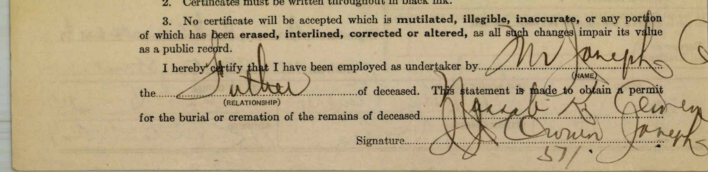
George, from Ash-Shams, 1930. Ash-Shams, 1 October 1930, p. 104: a printed portrait of George with a caption reading, in our translation, “the late George Aoun, son of the Damouri notable Khawaja Yusuf al-Khoury Boutros Aoun, who died by drowning in one of the lakes of the United States.” The portrait is cropped from the page; the caption is a separate block beside it. Our translation, to be confirmed by a native reader.
The Caravan, 2 February 1961: the death of Esther. A cable told Mitchell Awn of the death in Beirut of his sister, Mrs. Esther Ayoub. Survivors named: four brothers (John, Mitchel, Louis and Anthony Awn), two sisters in Brooklyn (Mrs. Matilda Gorayeb and Mrs. Theresa Koury) and her own children. A Mass was said at Our Lady of Lebanon on Sunday 29 January 1961. The paper gives no date of death.
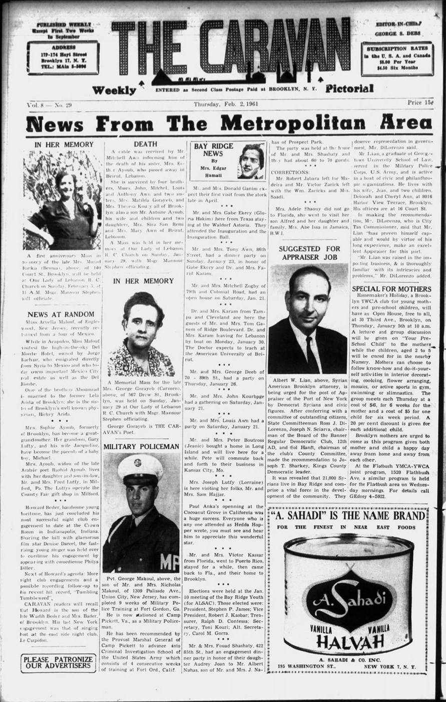
- About 1897Nassib born, by his certificate
- 2 Oct 1924Nassib dies at 37 Tompkins Place, aged 27
- 5 Oct 1924Prayers at Our Lady of Lebanon; buried at St. John’s
- 7 Apr 1930The census counts George at home, aged 21
- 27 Jul 1930George drowns, under 24
- 30 Jul 1930Prayers for George; interred at St. John’s
- 29 Jan 1961A Mass for Esther, who died in Beirut
What we foundThe ship list of 1920 shows eight children, but the family had nine. Esther, who lived in Lebanon, is named in the Arabic notices of 1930 and 1935, and in 1961 an American paper reports her death in Beirut.
“informing him of the death in Beirut, Lebanon, of his sister, Mrs. Esther Ayoub”The Caravan, 2 February 1961
Joseph and Assin’s children, as the records name them, were John, Michel (Mitchell), Elias (Louis), Anthony, George, Nassib, Esther, Matilda and Theresa. Esther is not on the 1920 ship list or in the 1925 census. The English death notices of 1932 and 1935 name only Matilda and Theresa as daughters, but the Arabic notices of 1930, 1932 and 1935 list Esther first among the sisters, and in 1930 as the wife of As’ad Aoun (our translation, to be confirmed by a native reader).
The Caravan of 2 February 1961 tells the rest. A cable told Mitchell Awn of the death of his sister, Mrs. Esther Ayoub, in Beirut. She was survived by four brothers (John, Mitchel, Louis and Anthony), two sisters in Brooklyn (Mrs. Matilda Gorayeb and Mrs. Theresa Koury), a son, Antoine Ayoub, with his wife and children, and two daughters in Beirut, printed as Mrs. Sira San Remi and Mrs. Mary Awn. A Mass was said for her at Our Lady of Lebanon on Sunday, 29 January 1961. The paper gives no date of death. That she is the sister the family says stayed in Lebanon is probable, and that she is the wife of As’ad Aoun is probable too, since the Caravan’s “Ayoub” fits the name Ash-Shams gives for her husband, As’ad Ayoub Aoun.
Two brothers died young. Nassib’s death certificate shows “Nassib K. Owen,” a printer, single, aged 27, who died at 37 Tompkins Place on 2 October 1924 of broncho-pneumonia, with pulmonary tuberculosis contributing; his mother is written “Aseen Owen,” and he was buried at St. John’s Cemetery on 5 October. The ship list of 1920 has him as Nessil, 22, so the certificate’s age may be a year off. Al-Hoda and Mira’at al-Gharb printed his family’s notice on 3 October: he died “the evening of Thursday, the 2nd of October,” at about half past six, with prayers on Sunday at two in the afternoon at Our Lady of Lebanon, from the house on Tompkins Place (our translation, to be confirmed by a native reader). Ash-Shams of 1 November 1924 called him “lamented for his youth,” aged 27.
George’s death came in the summer of 1930, and no certificate for it has been found, so what follows is what the papers said. In April the census taker had counted him at home, 21, managing a ladies’ apparel store. The fullest account is in Al-Hoda of 9 September 1930, which printed his portrait over a notice of the memorial Mass held about forty days after his death: a requiem at Our Lady of Lebanon on Sunday 7 September, with friends from the Damour brotherhood around the catafalque (our translation, to be confirmed by a native reader). The paper says that on the morning of Sunday 27 July he went to an outing at a lake about fifty miles from Brooklyn with a crowd of friends, after they had all attended Mass at Our Lady of Lebanon. They chose a place and sat down to eat, and then George and a companion went out in a small boat. They had gone only about fifty feet from the shore when the boat tipped. The companion, who could swim, tried twice to save him, failed, and reached the shore exhausted. Swimmers nearby shouted, the police and shore guards came, and George was found after an hour and a half, lifeless. The paper calls him a good young man of perfect character, and says the news reached his parents, brothers and sisters, who had sent him off that morning in health and joy. It does not name the lake in a way we can read with certainty; the word after “lake” reads to us as “wtsknkma,” which may be a place name (to be checked by a native reader).
The family’s own notice in Mira’at al-Gharb of 30 July says he died on Sunday, 27 July, “after a sudden accident,” in a year of his age “not exceeding the twenty-fourth,” with prayers on the Wednesday at Our Lady of Lebanon and the home address 466 78th Street (our translation, to be confirmed by a native reader). St. John’s Cemetery records his interment on 30 July 1930 and his move to Section 3, Row C on 8 June 1961. Two months after the drowning Ash-Shams printed his portrait. The papers do not agree on where the lake was, on which day he left home, or on his age; those disagreements are set out below.
That weekend was a heat wave. The Brooklyn Eagle, the Brooklyn Daily Times and the Standard-Union of Monday 28 July 1930 carried it on their front pages, with lists of people who had drowned at beaches, rivers and lakes around New York, mostly on the Saturday and Sunday (one headline counted “twelve drowned”). We read six of those pages looking for George, and none names him. Some columns are too faint to read in our copies, and the Monday papers may have gone to press before the news reached them, so this proves nothing either way. It only shows what that weekend was like.
The family has told the story a little differently. The family says, through Jackie, that two of Anthony’s brothers died young: one drowned, and one died after surgery on his arm. The records bear out the drowning, but Nassib’s certificate names pneumonia and tuberculosis, not surgery, so the arm surgery does not yet match either brother.
Still open
Where George drowned. Mira’at al-Gharb says a canoe on a lake on Long Island, As-Sayeh the shore of Long Island, Ash-Shams a lake in Rhode Island “near New York,” and Al-Hoda a lake “about fifty miles from Brooklyn”; none is confirmed.
George’s age: Ash-Shams says 22, the family’s notice “not exceeding” 24.
The hour of his service, two in the afternoon in Mira’at and three in the first Al-Hoda printing, and whether he left home on Saturday or Sunday morning.
Nassib’s day of death: Thursday 2 October on the certificate and the paid notices, but “last Friday” in As-Sayeh of 6 October.
Which brother, if either, had the arm surgery.
Esther’s birth, marriage and death dates, and her husband’s full name. All the Arabic readings are our translation, to be confirmed by a native reader.
Family memory: George, Nassib or Esther. If you know, please tell Sarah.
Questions for the family
- Does anyone know Esther’s birth year, or the names of her grandchildren?
- Which brother, in the family story, died after surgery on his arm?
- Does anyone know who “Mrs. Mary Awn” of Beirut was?
- Does anyone know where George drowned, or have a photograph of him?
How we know this
- Nassib’s death certificate, no. 18129, 1924 From the record.
- Al-Hoda, 3 and 4 October 1924, p.2, and Mira’at al-Gharb, 3 October: the paid notices From the papers; our translation, to be confirmed by a native reader.
- Mira’at al-Gharb, 14 October 1924: a gift in his memory From the paper; our translation, to be confirmed by a native reader.
- Mira’at al-Gharb, 30 July 1930: the family’s notice From the paper; our translation, to be confirmed by a native reader.
- Al-Hoda, July 1930: a second family notice From a saved screenshot; our translation, to be confirmed by a native reader.
- As-Sayeh, 31 July 1930: “The young man George Aoun drowned” From the paper; our translation, to be confirmed by a native reader.
- Al-Hoda, 9 September 1930, p.3: the memorial and the account of the drowning From the paper; our translation, to be confirmed by a native reader.
- Six Brooklyn English-language pages of 28 July 1930: the heat-wave drowning lists; none names George. From what the pages print. A search that found nothing is not proof.
- St. John’s Cemetery burial search, George From the search screens, as read.
- The Caravan, 2 February 1961: Esther’s death From the page, as printed.
- Esther in Lebanon and the nine children Our summary of the records; that Esther is the sister who stayed in Lebanon is probable.
- Al-Hoda, 16 October 1935: Assin’s notice, which names Esther From the paper; our translation, to be confirmed by a native reader.
The crossing, 1920
Still open in this line ↓Joseph’s pageAssin’s pageAnthony’s page
Spellings: on the ship list the family is Aoun. The children are written Thirese (Theresa), Georges (George), Michel (Mitchell), Elias, Antoine (Anthony), Nessil (Nassib), Matilde (Matilda) and Jean (John).
Anthony's immigration identification card, 1920. A third-class card from the Grampian, sailing from Southampton on 25 August 1920, with the passenger name written Antoine Aoun. Source: Immigration identification card, third class, S.S. Grampian, 1920; the original is held by the family. Name as written: Antoine Aoun.

The Grampian passenger list, 1920. Aoun, father Youseuf (53) and mother Essine (45), with children Thirsie, Georges, Michel, Elias and Antoine, last residence Damour. Column 12 (the nearest relative in the country they left) names an uncle, Michal Malleut, of Damour; the destination, Brooklyn, is in column 13. Lines 12 to 14 of the same group are Nessil (22), Matilde (29) and Jean (16). Source: Passenger passenger list, S.S. Grampian (Southampton 25 August 1920; Quebec 3 September 1920), St. Albans, Vermont, National Archives microfilm M1464, List 1, sheet 46, lines 5 to 14, as viewed on FamilySearch. Names as written: Aoun, Youseuf, Essine, Thirsie, Georges, Michel, Elias, Antoine, Nessil, Matilde, Jean.
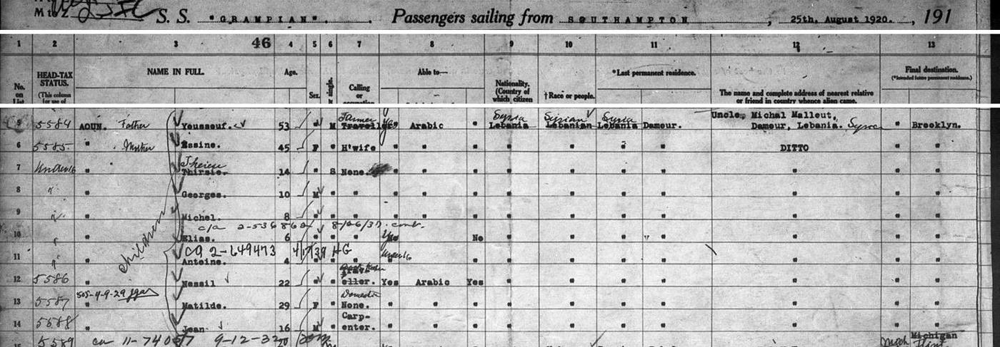

Nassib’s Canadian border card, 3 September 1920. A border card for “Aoun, Nessil,” age 22, born Damour, Syria, travelling with “Youssouf, 53.” The head-tax number, 5586, is the same as line 12 of the ship’s passenger list. The nearest relative is “Michel Mallout” of Damour (our reading). The destination is Brooklyn, “c/o Aunt,” at an address we read as 202 Baltic Street (the handwriting is hard to read; the Quebec arrival sheet prints 202 Baltic Street for the same party; our reading of the aunt’s name).

- 25 Aug 1920The family leaves Southampton on the Grampian
- 3 Sep 1920The ship lands at Quebec
- 5 Sep 1920Most of them cross into New York State at Rouses Point
- ThenOn to Brooklyn
What we foundNassib’s own border card shows where the oldest son was headed: Brooklyn, in care of an aunt, at what we read as 202 Baltic Street. The ship list names only an uncle back in Damour, so the card is the first sign of a relative on this side of the ocean (the aunt’s name is our reading of faint writing; the Quebec arrival sheet for the same party names a sister, Mrs. Owen, at 202 Baltic Street).
“Uncle, Michal Malleut, Damour”The S.S. Grampian passenger list, Quebec, 3 September 1920, the nearest relative named for the whole family
On 25 August 1920 the Aoun family left Southampton on the S.S. Grampian, bound for Quebec, on third-class tickets. One of the small cards from that crossing, Anthony’s identification card, is still held by the family. It carries a doctor’s vaccination stamp, the words “U.S.A. Passenger,” and a hand-written “11” after the word “line” (our reading), which would be his line on the ship’s list.
On the list, which was made out for the landing at Quebec on 3 September, the family stands together on lines 5 to 14. Joseph is written Youseuf, a farmer of 53 who could read Arabic. Assin is Essine, 45, “H’wife.” After them come Thirese (14), Georges (10), Michel (8), Elias (6) and Antoine (4), and then the older three: Nessil (22), Matilde (29) and Jean (16), whose calling is written “Carpenter.” Everyone’s last home is Damour, the destination is Brooklyn, and the nearest relative named for the whole party is an uncle, Michal Malleut, in Damour. No one in America is named. The list does not say how they were related; that the nine are Joseph and Assin’s children comes from the family and from the later records.
From Quebec they went on by train. The naturalization papers of Anthony, Matilda, Mitchell, Theresa and John give 5 September 1920 for crossing into New York State at Rouses Point, and several name the Delaware & Hudson Railway. Elias’s papers give 7 September. Nassib’s border card then fills in a little more. It was filed on the same day as the ship list. It repeats the head-tax number from line 12, 5586, and it calls his nearest relative “Michel Mallout” of Damour, probably the same uncle spelled another way (our reading). It also says that his passage was paid by his parents (our reading).
Not everything adds up. Anthony is 4 on the list but 6 by his own birth date, 6 March 1914. A 1940 Brooklyn Eagle story says that John came with “his father, mother, two sisters and four brothers,” but the list shows two sisters and five brothers besides John. The count of four does not match the list, and why is not known.
Still open
The uncle: Michal Malleut is named for the whole family, and “Michel Mallout” on Nassib’s card is probably the same man. No record says who he was.
The aunt: Nassib’s card says “c/o Aunt” and a name we cannot read, at an address we read as 202 Baltic Street, Brooklyn; the Quebec arrival sheet names “Sister, Mrs. … Owen, 202, Baltic Street.” The 1920 census page for that house lists an Owen household there; that it is the same family is a lead, not proven.
The ages: six of the nine children’s ages on the ship list do not match the 1925 census. Matilda is 29 on the list, 23 in the census, and born in 1899 by her own petition, so 20 on the ship.
How many came: the Eagle’s count of four brothers against the list’s five.
The day at Rouses Point: 5 September in five of the family’s papers, 7 September in Elias’s.
Family memory: why they left Damour, what they carried, who met them in Brooklyn. If you know, please tell Sarah.
Questions for the family
- Does anyone know who Michal Malleut, the uncle, was?
- Does anyone know who the aunt on Baltic Street was?
- Did anyone hear why the family left Damour in 1920, or what the trip was like?
- Does anyone know what the family carried with them, or who met them in Brooklyn?
How we know this
- Anthony’s 1920 identification card: third class, S.S. Grampian, from Southampton on 25 August 1920; vaccination stamp; a line number we read as 11. From the record. The name and the line number are our readings.
- The Grampian passenger list, Quebec, 3 September 1920 (National Archives M1464, List 1, sheet 46, lines 5 to 14): names and ages as printed, destination Brooklyn, nearest relative “Uncle, Michal Malleut, Damour.” From the record.
- Nassib’s Canadian border card, 3 September 1920: age 22, head-tax number 5586, nearest relative “Michel Mallout,” bound for Brooklyn “c/o Aunt.” From the record. The relative’s name, the address and the aunt’s name are our readings.
- Canadian passenger-list index line for Elias, 1920: age 6, arrived 3 September 1920 at Quebec on the Grampian. An index line, which points to the record but is not the record. Its “Brooklyn” as a birthplace is most likely the destination column misread.
- The naturalization papers of the family (Anthony, Matilda, Mitchell, Theresa, John and Elias): the entry at Rouses Point on 5 September 1920 (7 September in Elias’s), with the Delaware & Hudson Railway named in several. From the papers themselves.
Home on Tompkins Place
Spellings: the 1925 census taker wrote the family “Owen,” and the 1932 graduate list prints “Aoun.” These are one family.
1925 New York State census: the Awn family, written Owen. As read: at 37 Tompkins Place, Joseph Owen (58 as we read it, father), Aseen (40, wife), Matilda (23), John (21 or 26), Theresa (20), George (18), Micheal (16 as we read it), Luis (13 or 15) and Anthony (10), all born in Syria, five years in the United States, and listed as aliens. The five years fit their September 1920 arrival. George is probably the "Georges" of the 1920 passenger list (Document 2), whose age is in disagreement: 10 on the passenger list, 18 here. Source: New York State census, 1925, Brooklyn, Kings County, Assembly District 3, Election District 6, Block 1, page 10, lines 14-22, stamped 00426 (via Ancestry). Names as written: Owen, Joseph; Aseen; Matilda; John; Theresa; George; Micheal; Luis; Anthony.

Anthony's high school graduation, 30 June 1932. In a page of graduation lists, the Brooklyn Daily Eagle reports that 173 young men received their diplomas as the 64th graduating class of Alexander Hamilton High School, whose principal was Dr. Gilbert J. Raynor. The list of graduates begins with "Anthony Aoun." He would have been 18 (probably: the name, the city and the year fit, but the list gives no address). If it is him, the school was Alexander Hamilton High School. Source: Brooklyn Daily Eagle, Thursday, 30 June 1932, p. 16, "Old-Fashioned Virtues Lauded by Dr. Raynor." Viewed on Brooklyn Newsstand (Brooklyn Public Library); image number not recorded. Name as printed: Anthony Aoun.

- 2 Oct 1924Nassib dies at home
- 1925Nine people under one roof at 37 Tompkins Place
- 1926Matilda marries
- 30 Jun 1932An “Anthony Aoun” graduates from Hamilton High School
What we foundIn 1925 nine people lived at 37 Tompkins Place. Nassib, who had died at the same address the October before, is correctly left off the page.
“Still Aid in Fight for Success, He Tells 173 Graduates at Hamilton”Brooklyn Daily Eagle, 30 June 1932, page 16
By 1925 the family lived at 37 Tompkins Place in Brooklyn. The state census that year lists nine people at home, all born in Syria: Joseph, Assin and seven of their children, with the name written “Owen.” Nassib is missing, because he had died at this address the October before.
A graduate list of 30 June 1932 names an “Anthony Aoun,” first among the A’s of 173 graduates of Alexander Hamilton High School. He may be ours: Anthony was 18 that month, and the name and borough fit. The list gives no address, so it is probable and not proven.
Still open
Some ages in the 1925 census are hard to read: Joseph’s 58 as we read it, John’s 21 or 26, Michael’s first name and age.
Whether the 1932 graduate is our Anthony.
Family memory: the house on Tompkins Place. If you know, please tell Sarah.
Questions for the family
- Does anyone remember Tompkins Place or the family’s first years in the clothing trade?
How we know this
- The 1925 New York State census From the record, as read; some ages are hard to read.
- The Brooklyn Eagle, 30 June 1932 From the printed page. That the graduate is Anthony is probable.
Becoming American
Names on the papers: Elias signs “Elias Joseph Khoury Aoun,” Mitchell “Mitchell Joseph Khoury Aoun” (entered as “Michel Aoun”), John “John Joseph Awn” (entered as “Jean Aoun”), and Matilda “Matilda Gorayeb” (formerly “Mathilda Owen and Matilde Aoun”). Aoun, Awn and Owen are one family.
Fred Gorayeb's petition for citizenship, 1920. The man who would marry Anthony's sister Matilda. Fred Naleem Gorayeb, a merchant at 40 Washington Street, says he was born in Syria (then Turkey) in October 1889, left from Havre, and landed at New York on 9 November 1903 aboard the La Savoie. His witnesses were Philip E. Gorayeb, a merchant, and Moussa A. Daoud, in real estate. Only the right-hand page is his; the facing page belongs to another man. Source: Petition for Naturalization no. 108682, New York County Supreme Court, 1920 (petitioner's page). FamilySearch, "New York City, New York, United States records," image 540 of 843 (ark:/61903/3:1:3QSQ-G9M8-K93G-D). Name as written: Fred Naleem Gorayeb.
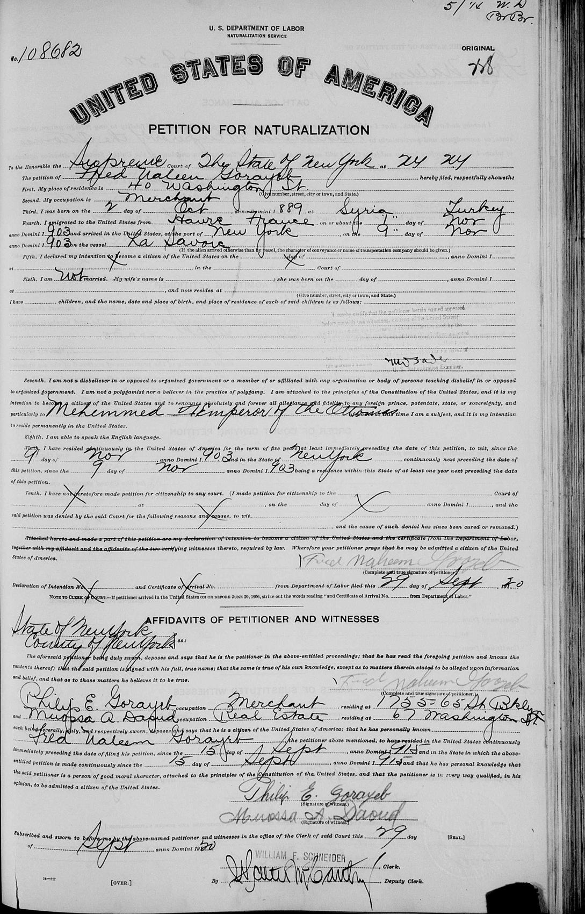
Elias's declaration of intention, 1937. Elias Joseph Khoury Aoun, a 25-year-old salesman of 923 73rd Street, born in Damour on 3 May 1912, tells the court he married Isabelle on 18 April 1937 (she was born in Paterson, New Jersey, on 20 August 1916). He entered at Rouses Point in September 1920 as Elias Aoun. A certificate number is hidden. Source: Declaration of Intention no. 262980, U.S. District Court, Eastern District of New York (Brooklyn), 10 September 1937. As viewed on FamilySearch. Name as written: Elias Joseph Khoury Aoun.
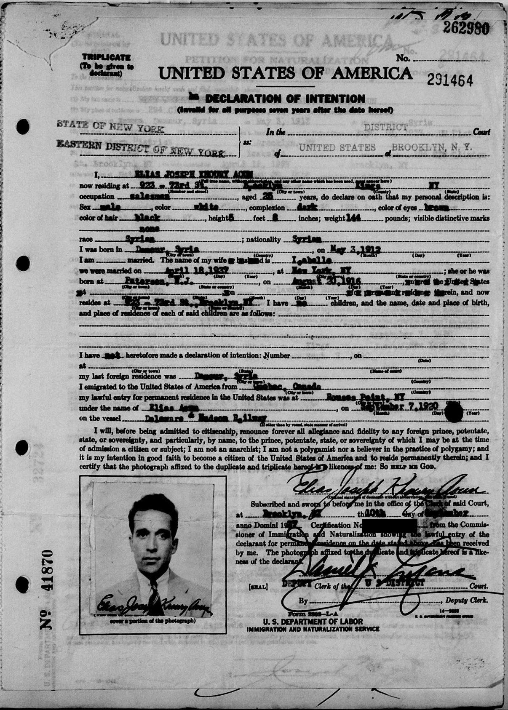
Elias, from his 1937 declaration of intention. The photograph on Elias’s declaration of intention, 1937, cropped from the page. The declaration names him; his signature beneath it is partly covered by a printed note, and we read it as “Elias Joseph Khoury Aoun.”
Mitchell's declaration of intention, 15 November 1939. A 30-year-old salesman at 1047 Bay Ridge Parkway, single, 5 feet 6¾ inches and 152 pounds, born in Damour on 4 July 1909. He entered at Rouses Point on 5 September 1920 as Michel Aoun and signed with his full name, Mitchell Joseph Khoury Aoun. A certificate number is hidden. Source: Declaration of Intention, U.S. District Court, Eastern District of New York (Brooklyn), 15 November 1939. As viewed on FamilySearch. Names as written: Michel Aoun (entry), Mitchell Joseph Khoury Aoun (signature).

Mitchell, from his 1939 declaration of intention. The photograph on Mitchell’s declaration of intention, 15 November 1939, cropped from the page, with his signature, “Mitchell Joseph Khoury Aoun,” beneath it.
John's declaration of intention, 19 January 1940. John Joseph Awn, a 34-year-old merchant living at 1047 75th Street, single, gives his birth as 15 August 1905 in Damour. He says he first declared his intention in Brooklyn on 23 April 1926 (an earlier declaration we have not seen) and that he entered at Rouses Point on 5 September 1920 as Jean Aoun. A certificate number is hidden. Source: Declaration of Intention no. 290248, U.S. District Court, Eastern District of New York (Brooklyn), 19 January 1940. As viewed on FamilySearch. Name as written: John Joseph Awn (entered as Jean Aoun).
John, from his 1940 declaration of intention. The photograph on John’s declaration of intention, 19 January 1940, cropped from the page, with his signature, “John J. Awn,” beneath it.
Elias's oath of allegiance, 6 February 1941. The last page of Elias's file: he is sworn in as a citizen, signing "Elias Joseph Khoury Aoun." Source: Petition for Naturalization no. 291464, oath page, U.S. District Court, Eastern District of New York (Brooklyn), 6 February 1941. As viewed on FamilySearch. Name as written: Elias Joseph Khoury Aoun.
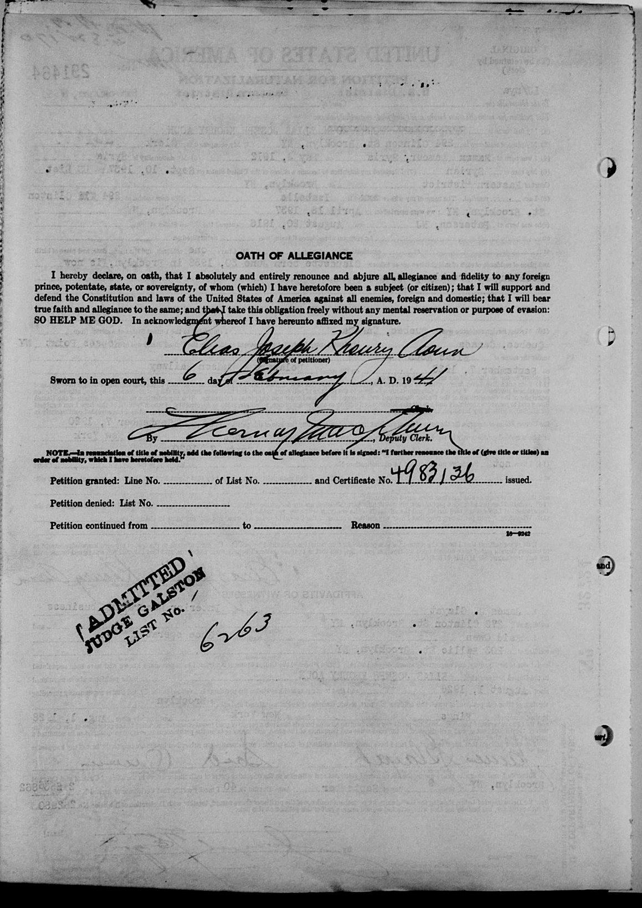
Matilda's petition for naturalization, 1942. Here she is "Matilda Gorayeb, formerly Mathilda Owen and Matilde Aoun," a housewife of 1047 Bay Ridge Parkway, aged 42, born on 16 October 1899 in Damour (spelled Domeus), with a scar on her throat. She married Fred on 25 April 1926 in Brooklyn and has no children. She gives Fred's birth as 17 December 1889 in Damour, and says he came to New York in 1902. This is the third spelling in the file: Owen, Aoun and now Gorayeb. Source: Petition for Naturalization no. 337351, U.S. District Court, Eastern District of New York (Brooklyn), 1942. FamilySearch, "Brooklyn, New York City, New York, United States records," image 922 of 1930, National Archives and Records Administration, Northeast Region (ark:/61903/3:1:3Q9M-CS9H-1QQV-X). Names as written: Matilda Gorayeb, formerly Mathilda Owen and Matilde Aoun.
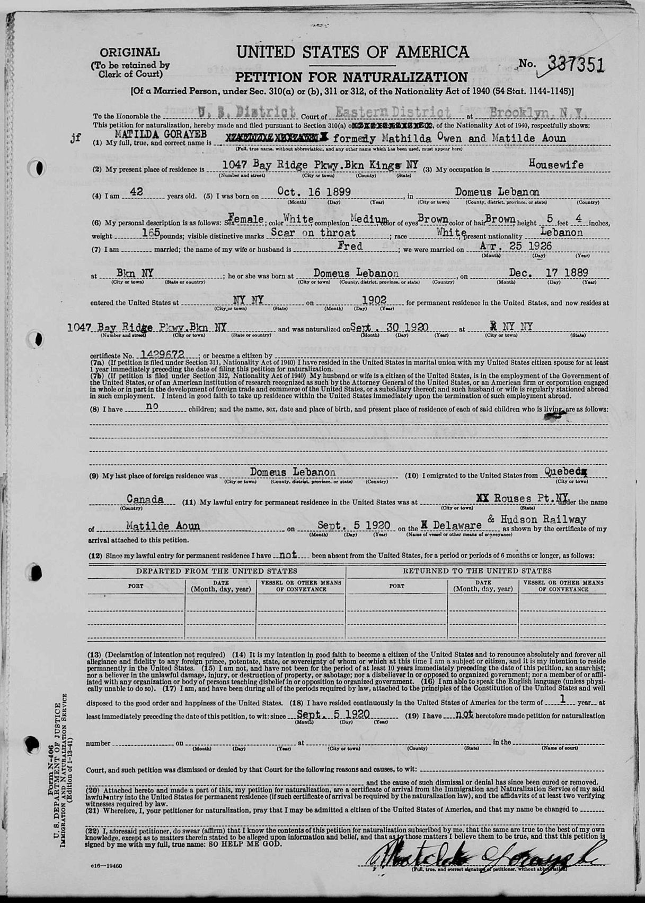
Matilda's witnesses and oath, 1942. Isabel Awn, a housewife of 294 Clinton Street (Elias's wife), and Fred Gorayeb swore on 28 May 1942 that they had known Matilda since 1 January 1927. She took the oath on 30 June 1942, signing "Matilda Gorayeb." The certificate-of-arrival number is covered, but the naturalization certificate no. 5328449 is visible at the bottom. Source: Petition for Naturalization no. 337351, witness and oath page, 28 May and 30 June 1942. FamilySearch, "Brooklyn, New York City, New York, United States records," image 924 of 1930, National Archives and Records Administration, Northeast Region (ark:/61903/3:1:3Q9M-CS9H-1Q7P-M). Names as written: Isabel Awn, Fred Gorayeb, Matilda Gorayeb.
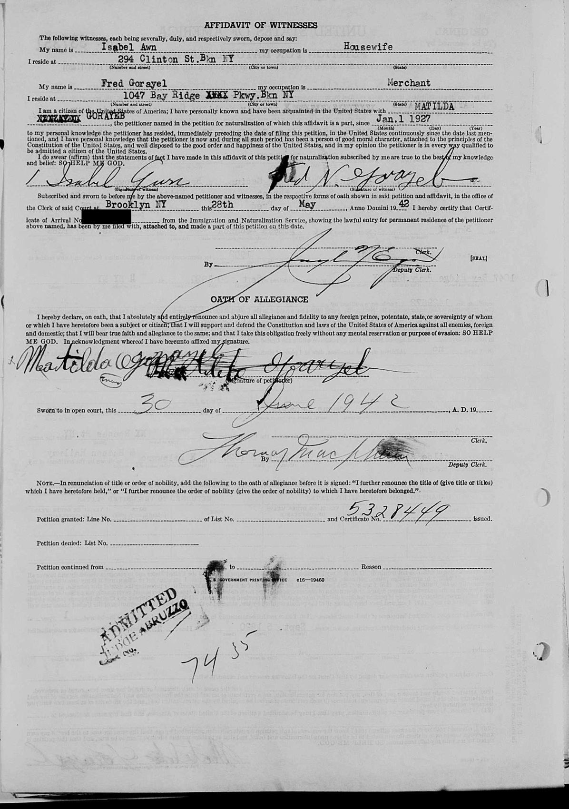
John's petition for naturalization, 1942. Here he is "John Joseph Awn, formerly Jean Aoun and Jean Owen," a merchant, 39 years old, and this time he gives his birth as 4 August 1903 in Damour. The two birth dates, 1905 and 1903, are one of the open disagreements in this story. Source: Petition for Naturalization no. 351166, U.S. District Court, Eastern District of New York (Brooklyn), 1942. As viewed on FamilySearch. Names as written: John Joseph Awn, formerly Jean Aoun and Jean Owen.

John's witnesses and oath, 1942. Said Owen, a shoemaker of 294 Clinton Street, and Fred Gorayeb, a merchant of 1047 Bay Ridge Parkway, swore on 17 September 1942 that they had known John since 1 January 1928. John took the oath on 5 November 1942. The certificate-of-arrival number is covered, but the naturalization certificate no. 5331896 is visible at the bottom. Source: Petition for Naturalization no. 351166, witness and oath page, U.S. District Court, Eastern District of New York (Brooklyn), 1942. As viewed on FamilySearch. Names as written: Said Owen, Fred Gorayeb; John signed "John Joseph Owen."
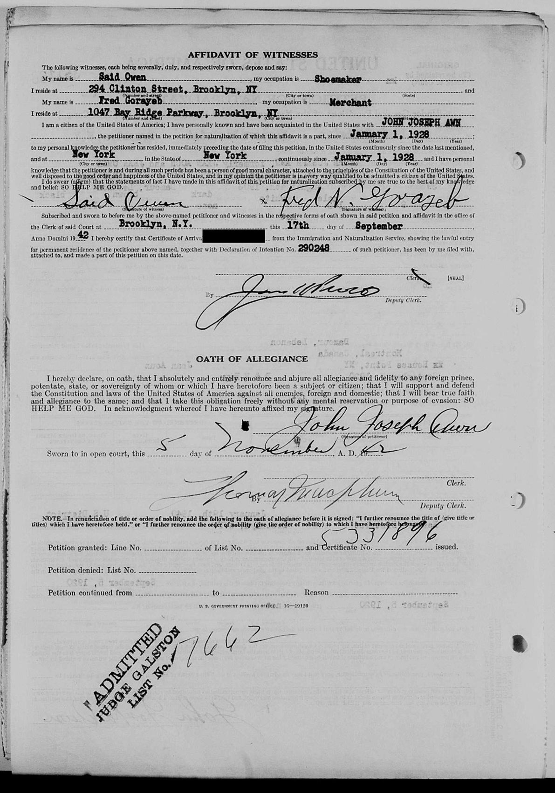
Mitchell’s petition for naturalization, 1943. Filed in the Southern District of New York after his move to 420 Central Park West. He is “Mitchell Joseph Khoury Aoun, formerly Michell Aoun,” a ladies’ wear salesman, 33, born 4 July 1909 at Damour. His witnesses’ sworn statement was filed on 10 February 1943 and his oath followed on 9 June 1943. Source: Petition for Naturalization no. 440438, U.S. District Court, Southern District of New York, 1943. As viewed on FamilySearch.

Theresa Koury's petition for naturalization, 1955. Theresa (written Theresa Koury, born 7 August 1905 in Damour) tells the court that she entered at Rouses Point on 5 September 1920 as Theresa Aoun, married Michael Koury on 12 January 1939, and has three children born in Brooklyn. She signed it in her own hand. Her alien registration number is hidden. Source: Petition for Naturalization no. 537554, 1955. FamilySearch, "Brooklyn, New York City, New York, United States records," image 1011 of 1338, National Archives and Records Administration, Northeast Region (ark:/61903/3:1:3Q9M-CSMJ-ZPWL). Names as written: Theresa Koury, Theresa Aoun.

The witnesses’ sworn statement, 5 April 1955. Louise Awn of 26 Harbor Lane and Helen Awn of 95 86th Street say they have known Theresa since at least 1 April 1950. Helen Awn’s address is the one where Anthony’s wife lived, so she is probably the same woman. Theresa took the oath of allegiance on 10 May 1955. Source: Petition for Naturalization no. 537554, 1955, witness page. FamilySearch, “Brooklyn, New York City, New York, United States records,” image 1013 of 1338 (ark:/61903/3:1:3Q9M-CSMJ-ZPCP).

- 5 Sep 1920The brothers and sisters enter at Rouses Point, by their papers (Elias says 7 September)
- 30 Sep 1920Fred Gorayeb becomes a citizen
- 6 Feb 1941Elias takes the oath
- 30 Jun 1942Matilda takes the oath
- 5 Nov 1942John takes the oath
- 10 Nov 1942Anthony takes the oath
- 9 Jun 1943Mitchell takes the oath; a court order then makes Awn his name
- 10 May 1955Theresa takes the oath
What we foundThe papers agree on the steps but not on the days. John gives his birth date three different ways in his own papers (and a fourth in a court request), and Matilda’s husband Fred has four different birth dates in four documents.
“Mitchell Joseph Khoury Aoun formerly Michell Aoun”Mitchell’s petition for naturalization, Southern District of New York, 1943
Each of the Awn children who stayed in New York became a citizen the same way: a declaration of intention, a petition with two witnesses, and an oath in open court. Elias swore his declaration on 10 September 1937 and his oath on 6 February 1941. Mitchell’s declaration is dated 15 November 1939 and his oath 9 June 1943, after which a court order made Awn his legal name. John declared on 19 January 1940 and took the oath on 5 November 1942; his declaration mentions an earlier one of 23 April 1926 that we have not seen. Anthony’s papers, a declaration on 4 May 1939 and an oath on 10 November 1942, are in his own section. Matilda took the oath on 30 June 1942, and Theresa waited until 10 May 1955.
Their papers tell the same story of the crossing. Each says the family entered the United States at Rouses Point, New York, on 5 September 1920, on the Delaware and Hudson Railway, and each is entered under the old spelling: “Michel Aoun,” “Jean Aoun,” “Matilde Aoun,” “Theresa Aoun.” Elias’s papers give 7 September. Matilda’s petition lists her last place of foreign residence as “Domeus Lebanon” and says she came from Quebec, Canada.
The papers also show the name changing. John is “formerly Jean Aoun and Jean Owen,” Matilda “formerly Mathilda Owen and Matilde Aoun,” and Mitchell “formerly Michell Aoun.” The people who stood up for them were neighbors and family. Isabel Awn and Fred Gorayeb swore they had known Matilda since 1 January 1927. Said Owen, a shoemaker of 294 Clinton Street, and Fred Gorayeb swore the same for John since 1 January 1928, and Said Owen stood for Elias too, with James J. Glayat. Louise Awn and Helen Awn (of 95 86th Street) vouched for Theresa in 1955. How Said Owen was related is a question for the family.
Fred Gorayeb, who married Matilda, had his own papers first. He became a citizen on 30 September 1920, under petition number 108682 in the Supreme Court of New York County, and a few months later he applied for a passport for a business trip to Cuba, Panama, Ecuador and Peru. Matilda’s petition says they married on 25 April 1926 in Brooklyn, and that rests on this one paper. But Fred’s birth date runs 17 December 1889 on Matilda’s petition, 2 October 1889 on his own, 5 November 1889 on his 1942 draft card and 17 October 1890 on his passport application. His own sworn papers come first.
The ages disagree too. John’s declaration says he was born on 15 August 1905, a note on the back of his 1940 draft card says 1904, and his petition and 1942 draft card say 4 August 1903. Elias’s petition says 3 May 1912, the naturalization index (an index line, which points to the record but is not the record) says 1913, and the 1920 ship list points to about 1914. Matilda’s own petition makes her 20 when she arrived, where the ship list says 29. Theresa’s petition says she was born on 7 August 1905, and an index line for a “Theresa J Aoun” of 1905 fits her, though it is only an index line.
Still open
John’s birth date: 1905, 1904 or 1903, and Theresa’s birth day, 7 August on her petition against 15 August in John’s lawyer’s papers.
Matilda’s age, three ways: 29 on the ship list, 23 in the 1925 census, and 16 October 1899 on her petition.
Elias’s birth date, 3 May 1912, 1913 or about 1914, and his entry date, 7 September or 5 September 1920.
Fred Gorayeb’s birth date and the year he arrived, 1902 or 1903.
Anthony’s nationality, “Syrian” on his declaration and “France” on his 1940 draft card, which is covered in his section.
John’s earlier 1926 declaration, and Theresa’s second alien registration card, have not been seen.
Family memory: the oath ceremonies, or a citizenship certificate. If you know, please tell Sarah.
Questions for the family
- Does anyone have a citizenship certificate or a photograph from one of these ceremonies?
- Who was Said Owen, the shoemaker who stood as a witness for John and Elias?
- Does anyone remember the brothers talking about taking the oath, or about changing the name from Aoun to Awn?
How we know this
- Elias’s declaration and oath, 1937 and 1941 From the records, as read; the declaration’s photograph is cropped from the page.
- Mitchell’s declaration, petition and name-change order From the records, as read.
- John’s declaration, petition and oath From the records, as read. The four birth dates are an open question.
- Matilda’s petition, 1942 From the record, as read. Her age is an open question.
- Fred Gorayeb’s petition, 1920 From the record, as read.
- Fred Gorayeb’s passport application, 1921 From the record, as read.
- Theresa’s petition and witnesses, 1955 From the record, as read.
- Anthony’s naturalization papers From the records, as read; the full readings are in his section.
- The naturalization index lines for Elias and Matilda Index lines, which point to the records but are not the records.
The brothers' and sisters' later lives
Names on these papers: Matilda Gorayeb (also “Mathilde,” “Matil”), Fred Nahim Gorayeb, Elias (called Louis J. Awn on his marriage certificate), John Joseph Awn (“Jean” on the ship list), Mitchell Joseph Khoury Aoun, later Mitchell Awn, and Theresa Koury. Aoun, Awn and Owen are one family.
Fred becomes a citizen, 30 September 1920. The oath of allegiance and the court's order admitting Fred Naleem Gorayeb as a citizen, with his certificate of naturalization number written at the bottom. Matilda's petition later leans on this certificate. Source: Petition for Naturalization no. 108682, New York County Supreme Court, oath and order, 30 September 1920. FamilySearch, "New York City, New York, United States records," image 541 of 843 (ark:/61903/3:1:3QS7-89M8-K99V-6). Name as written: Fred Naleem Gorayeb.

Fred's passport application, 1921. A naturalized citizen applying for a passport to travel for his firm to Cuba, Panama, Ecuador and Peru. He gives his birth as 17 October 1890 in Mount Lebanon, Syria, says he sailed from Beirut around 2 November 1903, and lives at 51 Washington Street as a commission merchant. His other papers give 1889, so his birth year is one of the small disagreements to settle. Source: U.S. passport application (application page), 1921. FamilySearch, "United States records," image 157 of 853, National Archives and Records Administration (ark:/61903/3:1:3QS7-L96B-SDKN). Name as written: Fred Naleem Gorayeb.
Fred Gorayeb, from his 1921 passport application. The photograph on Fred Gorayeb’s 1921 passport application, cropped from the page, with his signature, “Fred Naleem Gorayeb,” beneath it. Source: U.S. passport application, 1921, via Ancestry Library Edition.
Louis and Isabel's marriage certificate, 18 April 1937 (with their signatures). Louis J. Awn, 24, a salesman living at 1047 Bay Ridge Parkway and born in Damour, Mount Lebanon, son of Joseph, and Isabel Awn, 20, of 190 Warren Street, born in Paterson, New Jersey, daughter of Fred (no surname written) and Sarah, whose maiden name is written "Ganimy" (the same name is also written, then struck out, on the widow's maiden-name line), were married at 295 Hicks Street, Brooklyn, by M. Stephen. Both were marrying for the first time. The witnesses were Mitchell Awn and Theresa Awn, Louis's brother and sister. Louis's mother's name is hard to read in this hand. The bottom of the certificate carries the signatures of the groom and bride ("Louis Awn," "Isabel Awn") and of the two witnesses. Source: Certificate and Record of Marriage no. 5877, Brooklyn, New York City, 18 April 1937 (front and signature page). As viewed on FamilySearch. Names as written: Louis J. Awn, Isabel Awn, Mitchell Awn, Theresa Awn.

Louis and Isabelle sail on a cruise, 20 April 1937. Two days after their wedding on 18 April, "Louis Awn," 25, a merchant born in Damour, and "Isabelle Awn," 21, born in Paterson, New Jersey on 20 August 1916, appear as the first two names on the list of cruise passengers sailing from New York aboard the Pilsudski. Both give Brooklyn as home. The bracket and the stamp "not counted" mark them as round-trip cruise passengers rather than immigrants. This page does not say where the cruise went, so a honeymoon is probably:, not proven. Source: Passenger list, S.S. Pilsudski (cruise), sailing from New York, 20 April 1937. FamilySearch, "New York City, New York, United States records," image 267 of 778, National Archives and Records Administration (ark:/61903/3:1:33S7-95FW-RPD). Names as written: Louis Awn, Isabelle Awn.
John's draft card, 1940, with a note in his own hand. John Joseph Awn, 36, of 1047 Bay Ridge Parkway, a merchant working at 82 Greenwich Street, gives his birth as "Aug 15, 1904-05" in Damour and names "Anthony Aoun, Mrs. Mathulda Goryeb" (brother and sister) as the people who will always know his address. On the back he wrote: "my naturalization paper gives date of birth August 15, 1905. This is incorrect. I have proof to show date of birth should be August 15, 1904," and signed it. This is the start of his birth-date campaign; the court case followed in December 1940. Here he gives his country of citizenship as Syria. Source: U.S. World War II draft registration card, New York, 1940 (front and back). FamilySearch, "New York, United States records," image 483 of 1066, Ancestry.com (ark:/61903/3:1:3Q9M-C341-64Z7). Names as written: John Joseph Awn, Anthony Aoun, Mathulda Goryeb.

Mitchell's draft registration card, 16 October 1940. Mitchell Joseph Khoury Aoun, born 4 July 1909 in Damour, aged 31, "Country of Citizenship: France." He worked for his brother John at 82 Greenwich Street, the address later given for Awn's Specialty Shop (The family says:; probably:that it is the same business). His address was crossed out and rewritten by hand as 420 Central Park West. Source: U.S. World War II draft registration card, New York, 16 October 1940. As viewed on FamilySearch. Name as written: Mitchell Joseph Khoury Aoun.

The Koury household in the 1940 census. Michael Koury, head, 32, born Syria, a manufacturer of negligees; Theresa, wife, 30, born Syria; and Sophie Koury, mother-in-law, 62, widow, born Syria (as read). The line between Theresa and Sophie is a young child and is covered here because she may be living. Source: 1940 census, Brooklyn (copy in our files). Ages in the census are loose.
John's court case over his birthday, 5 December 1940. Headed "Would Deny Birth Date Change To Man as 'Plan to Avoid Draft.'" The Eagle reports that a Syrian in Brooklyn Federal Court asked to change his birth date from 15 August 1905 to 15 August 1903, and that Assistant Federal Attorney Frank Parker opposed it on the ground that its only conceivable purpose was to avoid the draft. Judge Marcus B. Campbell reserved decision. The applicant is named as John Joseph Awn, a merchant of 1047 75th St., who immigrated on 5 September 1920 with his father, mother, two sisters and four brothers. His lawyer argued that 15 August 1905 could not be his birth date because it was his sister Theresa's. The case arose from the declaration of intention he filed that January. The judge's decision has not been found, and John's later papers give 4 August 1903 (From the record:as reported; the judge's decision has not been found). Source: Brooklyn Eagle, Thursday, 5 December 1940, p. 11, Brooklyn Newsstand (Newspapers.com). Name as written: John Joseph Awn.
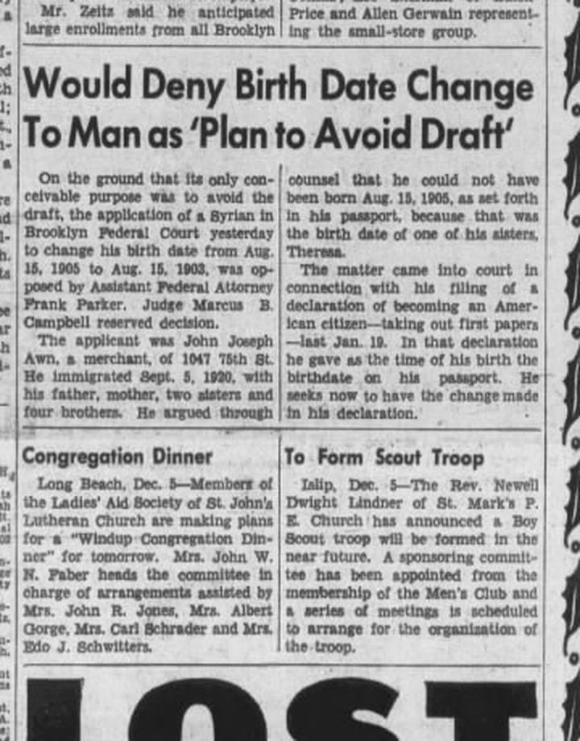
John's draft card, 1942. Registered on 15 February 1942 as "John J. Awn," 38, of 1047 Bay Ridge Parkway, born on 4 August 1903 in Damour, with "Mrs. Mathilda Gorayeb" as the person who will always know his address and himself as employer at 82 Greenwich Street, New York. The back describes him as 5 feet 9 inches, 183 pounds, white, with brown eyes and hair and a dark complexion. His birth is now 4 August 1903: his three birth dates are 15 August 1905 (declaration), 15 August 1904 (the note on the 1940 card) and 4 August 1903 (this card and his Social Security record). Source: U.S. World War II draft registration card, Local Board 175, Brooklyn, 15 February 1942 (front and back). FamilySearch, "New York, United States records," image 482 of 1066, Ancestry.com (ark:/61903/3:1:3Q9M-C341-6Q6K). Names as written: John J. Awn, Mrs. Mathilda Gorayeb.

Fred Gorayeb's draft card, April 1942. Matilda's husband, registered as "Fred Nahim Gorayeb," 53, of 1047-75th Street, Brooklyn, born 5 November 1889 in Damour (that date makes him 52 in April 1942; the card prints 53), self-employed at the same address, with his wife as the person who will always know his address. His telephone number is the same as John's, since they lived in the same house. The back describes him as 5 feet 3 inches, 165 pounds, with brown eyes, gray hair and a ruddy complexion. He signed "Fred N. Gorayeb." This is another birth date to reconcile: 5 November 1889 here, October 1889 on his 1920 petition, 17 December 1889 on his wife's petition and 17 October 1890 on his passport application. Source: U.S. World War II draft registration card, Local Board 175, Brooklyn, April 1942 (front and back). FamilySearch, "Brooklyn, New York City, New York, United States records," images 5566 and 5568 of 6375, National Archives and Records Administration, Northeast Region (ark:/61903/3:1:S3HT-DCJY-MY and ark:/61903/3:1:S3HT-DCJ9-SZM). Name as written: Fred Nahim Gorayeb.

The order changing Mitchell's name, 9 June 1943. Judge Vincent L. Leibell amends the petition to show that the petitioner asks to be named Mitchell Awn, and Mitchell signs his consent in the full name he was giving up. Source: Order amending the petition of Mitchell Joseph Khoury Aoun, U.S. District Court, Southern District of New York, 9 June 1943. As viewed on FamilySearch. Names as written: Mitchell Joseph Khoury Aoun, Mitchell Awn.
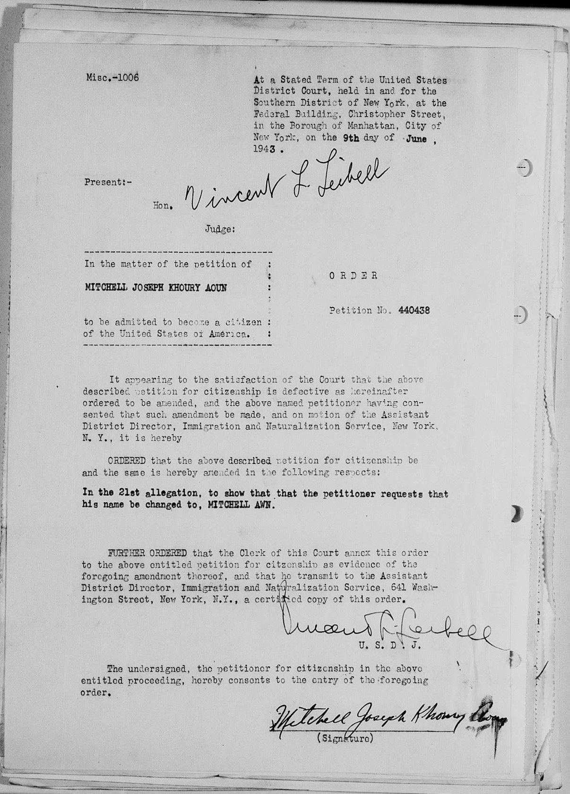
John flies home from Damascus, October 1947. On Pan American Airways' flight from Damascus, Syria, to New York on 5 October 1947, line 16 is "Awn, John," New York, with his address written in by hand as 1047 Bay Ridge Parkway, Brooklyn. He is marked "U.S. Citizen," with four bags weighing 45 pounds, and the immigrant inspector signed the page on 7 October 1947. It shows a trip to the Middle East in 1947 (From the record:); that he was visiting family in Lebanon is probably:, since the page gives no reason. The page is a retyped copy of the original Damascus passenger list, made in London. His passport number is blurred here. Source: Pan American Airways passenger passenger list, Damascus to New York, flight of 5 October 1947, line 16. FamilySearch, "New York, United States records," image 773 of 1095, Immigration and Naturalization Service (ark:/61903/3:1:3QS7-894K-MSFY). Name as written: Awn, John.
Mitchell buys a property, June 1947. In the Kings County deed index for 1947 (grantors, page 602 K), one entry names Mary E. Kellam as the seller and "Mitchell Awn" as the buyer, recorded in Section 18, Block 6031, Liber 7146, page 20. The date column is blank on this line; it sits under the 24 June 1947 entry (the next date marker, 25 June, comes several lines further down). The index gives no street address; the block and lot would have to be looked up to learn which house it was. Probably:that this is Anthony's brother Mitchell. Source: Kings County (Brooklyn) Register's deed index, grantors, 1947, page 602 K. As viewed on FamilySearch; image number not recorded. Name as written: Mitchell Awn.
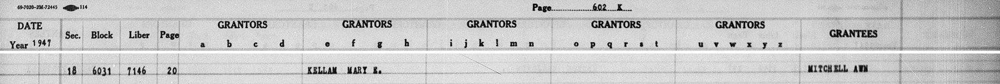
The Koury household in the 1950 census. “Koury Micheal,” head, 43, born Syria, a proprietor (clothing wholesale); “Therasa,” wife, 43, born Syria; “Shopy,” mother, 69, widow, born Syria (all as printed). The three lines below them are the couple’s young children and are covered here because they may be living. Source: 1950 census, Brooklyn, sheet 72 (copy in our files). The top of the Koury line shares its height with the end of the line above it on this page.
New York Times real-estate item, 11 April 1953: John Awn buys 24 Harbor Lane. In the "Apartments Lead in Brooklyn Deals" column: "John Awn bought the two-story one-family dwelling at 24 Harbor Lane from Philip Q. Valenti," with Charles J. Kawa as the broker. From the record: a John Awn bought this house in April 1953. Probably: this is Anthony Awn's brother John J. Awn (Document 109). A Louise Awn of 26 Harbor Lane witnessed Theresa's 1955 petition, which fits.
Source: The New York Times, Sat 11 Apr 1953, p. 26 (viewed on the Times archive page; the item is shown as a close crop). Name as written: Awn, John.
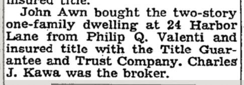
The Caravan, 5 November 1953, St. Nicholas Young Men’s Club officers. Page 5 of the Caravan of Thursday 5 November 1953: a photograph captioned “Officers of the St. Nicholas Young Men’s Club,” named from left to right as Charles, Albert, Mitchell Awn (president), Anthony Awn (recording secretary), Thomas and Nicholas (other officers’ surnames left out here). That these are our Mitchell and Anthony is probable (the names, the club, and the January 1954 item that calls Anthony the president’s brother). Source: The Caravan (Brooklyn), 5 November 1953, p. 5, via Newspapers.com.
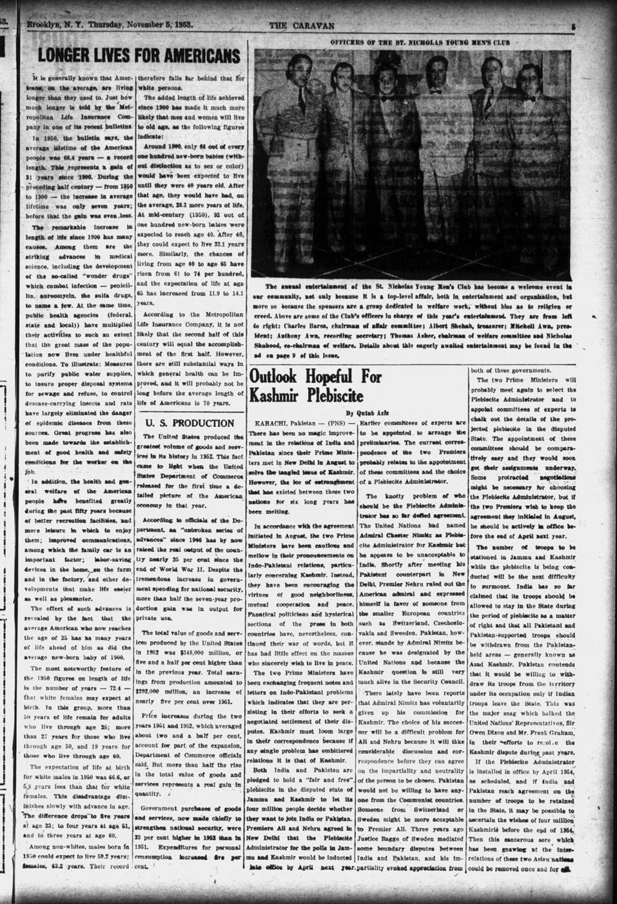
The Caravan, 14 January 1954, Mitchell Awn re-elected. Page 1 of the Caravan of Thursday 14 January 1954: “Mitchell Awn, popular philanthropist in our community, was unanimously re-elected President of the St. Nicholas Young Men’s Club, Inc.,” on Tuesday 12 January at the club’s headquarters, 264 Henry Street, Brooklyn; he was the only person nominated and 31 members attended. Among the other officers, the recording secretary is “Anthony Awn, brother of the president.” A photograph of Mitchell Awn is printed. That these are our Mitchell and Anthony is probable (the names and the stated brother relationship). Source: The Caravan (Brooklyn), 14 January 1954, p. 1, via Newspapers.com.
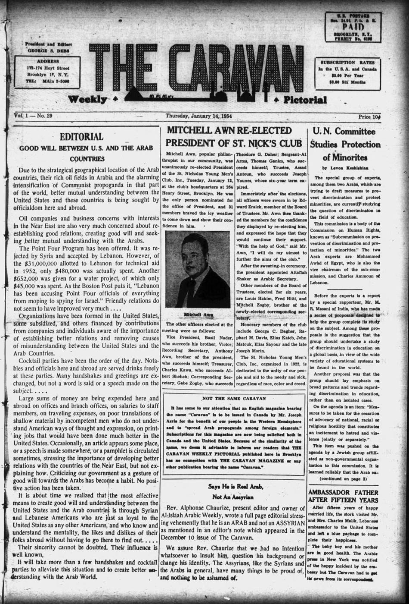
Mitchell Awn, to be honored, March 1955 (photograph). Under "To be honored," a portrait of Mitchell Awn. He and the other retiring officers of the St. Nicholas Young Men's Club were to be honored at a dinner at Andre's, 429 86th Street, Brooklyn. The notice lists Anthony Awn as recording secretary, "now president." Source: The Caravan, Brooklyn, N.Y., Thursday, 24 March 1955, p. 1. Brooklyn Newsstand. Names as printed: Mitchell Awn, Anthony Awn.

The Caravan, 26 June 1958, St. Jude gala committees. Page 4 of the Caravan of Thursday 26 June 1958: the committees for a gala for Danny Thomas and the St. Jude Hospital Fund, sponsored by the Caravan and the ALSAC Committee for Greater New York. The general arrangement committee lists “Mitchell Awn, Chairman,” and the volunteers include “Theresa Koury,” “Anthony Awn” and “Helen Awn.” That these are our Mitchell, Theresa, Anthony and Helen is probable (the names and a Brooklyn paper; no addresses or relations are printed). Source: The Caravan (Brooklyn), 26 June 1958, p. 4, via Newspapers.com.
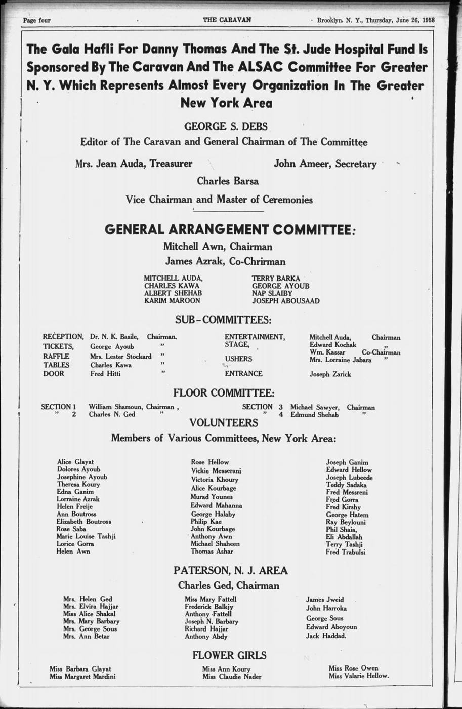
New York Times death notice for John J. Awn, 25 May 1977. John J. Awn died 22 May 1977, "beloved husband of the late Louise," "dear mother" (the notice says “mother”; we think a misprint, our guess) of their three children, and brother of Matilda Gorayeb, Teresa Koury, Mitchell and Elias Awn. Funeral Wednesday 9:30 a.m. from McLaughlin & Sons Colonial Home, Third Avenue at 97th Street; Mass at 10 a.m. at Our Lady of Lebanon Church, Henry and Remsen Streets. From the record: the notice names four surviving siblings. Anthony Awn is not listed because he died in 1966. Probably: this is the John Joseph Awn of Document 50, Anthony's older brother, because the siblings named (Matilda, Teresa, Mitchell and Elias) are Anthony's other brothers and sisters. The family says: John was a son of Joseph Awn, the father of all the Awn siblings, and not a son of Anthony.
Source: The New York Times, Wed 25 May 1977, p. 99 (viewed on the Times archive page; the notice is shown as a close crop). Name as written: Awn, John J.; Gorayeb, Matilda; Koury, Teresa.
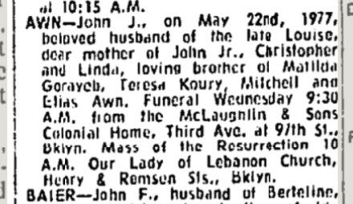
- 25 Apr 1926Matilda marries Fred Gorayeb
- 18 Apr 1937Elias (Louis) marries Isabel
- 12 Jan 1939Theresa marries Michael Koury
- 14 Oct 1940Mitchell marries Barbara
- 5 Dec 1940John asks a court to change his birth date
- 22 May 1977John dies
- Sep 1978Mitchell dies
- 5 Jan 2001Elias dies
What we foundIn 1940 a federal court was asked to change John’s birth date, and a government lawyer opposed it as a way to avoid the draft.
“Would Deny Birth Date Change To Man as ‘Plan to Avoid Draft’”The Brooklyn Eagle, 5 December 1940, page 11, headline
The brothers and sisters who stayed in the New York area lived close together, first in Bay Ridge and on Clinton Street, later on 86th Street. Awn’s Specialty Shop at 82 Greenwich Street ties several of them together. It is John’s business address on his 1940 and 1942 draft cards and Mitchell’s employer’s address on his 1940 card, and Anthony’s 1966 obituary calls him an associate in the shop. Elias’s obituary, as Find a Grave quotes it from the New York Times, calls the shop a fixture in the Wall Street area for over 50 years. That the shop and the Greenwich Street address are one business is probable, not proved.
John was the oldest brother in the household after Nassib’s death. He filed to become a citizen in 1940, took the oath on 5 November 1942, and in April 1940 the census has him heading the household at 1047 Bay Ridge Parkway, with his brothers Mitchell and Anthony, in wholesale ladies’ wear. His birth date appears four ways, three in his own papers and one in a court request: 15 August 1905 on his 1940 declaration, 15 August 1904 in the note he wrote on the back of his 1940 draft card, 4 August 1903 on his 1942 draft card and petition, and 15 August 1903, which the Eagle says he asked the court to order. The judge reserved decision, and we have not found the ruling. The Eagle item also says he came in 1920 with “two sisters and four brothers,” which does not match the ship list (see the crossing, above). In October 1947 a Pan American flight list has him coming home from Damascus as a U.S. citizen. He probably married Louise M. Alouf in 1951 (an index line, name and place only), and a John Awn bought 24 Harbor Lane in 1953, though Theresa’s 1955 witness lives at 26. John died on 22 May 1977; the Times notice names his wife, the late Louise, and his brothers and sisters, and a Mass at Our Lady of Lebanon in Brooklyn Heights.
Mitchell was born, he says, on 4 July 1909 at Damour. His draft card of 16 October 1940 gives his address as 420 Central Park West, his employer as his brother John, and his citizenship as “France,” as Anthony’s does. His 1943 petition gives his marriage to Barbara on 14 October 1940 at Yonkers, and on 9 June 1943 a federal court made Awn his legal name. A deed index for 1947 shows a Mitchell Awn as buyer of a property in Section 18, Block 6031, with no street address. By March 1949 he had a wife, Lourdes Nassr, who came from Manila; the card does not give the wedding date, and a Find a Grave listing says 1947. How his first marriage ended is not known. The Caravan shows him as president of the St. Nicholas Young Men’s Club in January 1954 and honored as a retiring officer in March 1955, when Anthony followed him as president. He died in September 1978 on Staten Island, and the Social Security index and a Find a Grave page, both leads only, say so.
Elias (Louis) married Isabel on 18 April 1937 in Brooklyn, with Mitchell and Theresa as witnesses. The certificate calls him Louis J. Awn, 24, a salesman at 1047 Bay Ridge Parkway, and her Isabel Awn, 20, of 190 Warren Street, born in Paterson, New Jersey. They were married at 295 Hicks Street by “M. Stephen,” and two days later “Louis Awn” and his wife are on the passenger list of the Pilsudski cruise. The certificate names her father as Fred, with no surname, and her mother as Sarah. A 1958 Caravan notice about a Fred H. Owen of 81 86th Street, who lived with “Mr. and Mrs. Louis Awn,” is probably her father. Elias became a citizen on 6 February 1941 (his papers are in Becoming American). He died on 5 January 2001, and Isabel on 13 February 2007; both are said to be buried at St. John Cemetery, Section 3, Row C, by Find a Grave, a lead only.
Matilda married Fred Gorayeb on 25 April 1926 and they had no children. The Arabic paper Ash-Shams reported the wedding on 1 May 1926, writing his name “Ghareeb” (probably Gorayeb; our translation, to be confirmed by a native reader). Fred came to New York as a boy in November 1903, was a merchant at 40 Washington Street in 1920, became a citizen on 30 September 1920, and in 1921 applied for a passport for a business trip to Cuba, Panama, Ecuador and Peru. His draft card of April 1942 says he was self-employed, with the same telephone number as John’s. His birth date is given four ways, as Becoming American shows, and where and when he died is not found. Matilda became a citizen on 30 June 1942.
Theresa was born, she says, on 7 August 1905, and the Social Security record (an index line) agrees. She married Michael Koury on 12 January 1939, and they had three children. The 1940 census puts the Koury household in the same building as Elias and Isabel, at 294 Clinton Street, and the 1950 census has them at 79 86th Street. She became a citizen on 10 May 1955, with Helen Awn, Anthony’s wife, as one of her witnesses. An obituary index line points to Berkeley Township, New Jersey, and March 1994 for “Theresa A. Koury,” which is probably hers.
Esther, who stayed in Lebanon, is in Nine children.
Still open
John’s birth date, four ways, and the court’s decision (we have not found it).
Whether the John Awn at 24 Harbor Lane is the same John, and which house his wife lived in (24 or 26).
Mitchell’s two marriages: when he married Lourdes, and how his first marriage ended.
Whether Fred Owen of 81 86th Street was Isabel’s father.
Where and when Fred Gorayeb and Theresa died.
Who ran the shop on Greenwich Street, and when it opened and closed.
Family memory: Awn’s Specialty Shop, the houses on 86th Street, Elias’s eye infection in 1920. If you know, please tell Sarah.
Questions for the family
- Can anyone settle John’s birth year, 1903 or 1905?
- Does anyone know when and where Fred Gorayeb died?
- Does anyone know how Mitchell’s two marriages ended?
- Does anyone have photographs of Awn’s Specialty Shop on Greenwich Street?
How we know this
- The 1940 and 1950 census pages, the Koury household From the record, as read; the children’s lines are left out.
- The Caravan, 5 November 1953, club officers From the printed page. That these are our Mitchell and Anthony is probable.
- The Caravan, 14 January 1954, Mitchell re-elected From the printed page. That these are our Mitchell and Anthony is probable.
- The Caravan, 26 June 1958, St. Jude gala committees From the printed page. That these are our family is probable.
- John’s draft card, 1940, with his note on the back From the record, as read. The four birth dates are an open question.
- John’s draft card, 1942 From the record, as read.
- The Brooklyn Eagle, 5 December 1940 From the printed page.
- The 1947 Pan American flight list From the record, as read.
- The New York Times, 11 April 1953 From the printed page. Probably this John.
- The New York Times death notice for John, 1977 From the printed page.
- Mitchell’s draft card, 1940 From the record, as read.
- The order changing Mitchell’s name, 1943 From the record, as read.
- The 1947 deed index line for Mitchell An index line, which points to the deed but is not the deed.
- The Caravan, 24 March 1955 From the printed page.
- Mitchell in the Social Security death index An index line, which points to the record but is not the record.
- Louis and Isabel’s marriage certificate, 1937 From the record, as read.
- The Pilsudski cruise list, 1937 From the record, as read.
- Elias’s obituary, 2001 Quoted on a Find a Grave page, which points to the notice but is not the notice.
- Ash-Shams, May 1926, on Matilda’s wedding Our translation, to be confirmed by a native reader.
- Fred Gorayeb’s petition, 1920 From the record, as read.
- Fred Gorayeb’s passport application, 1921 From the record, as read.
- Fred Gorayeb’s draft card, 1942 From the record, as read.
- Theresa’s petition, 1955 From the record, as read.
- Theresa’s Social Security record An index line, which points to the record but is not the record.
- The obituary index line for Theresa Koury An index line, which points to the notice but is not the notice.
Still open in this line
John's exact birth date; where George drowned, and his death record; which brother had the arm surgery the family remembers; how the sons of Habib Aoun and the Aql family were related to Joseph and Assin; why Joseph, and Assin and George, lie in different sections of St. John’s; Mitchell's two marriages; and a record of Elias's delayed entry at the border (the family says an eye infection held him back).